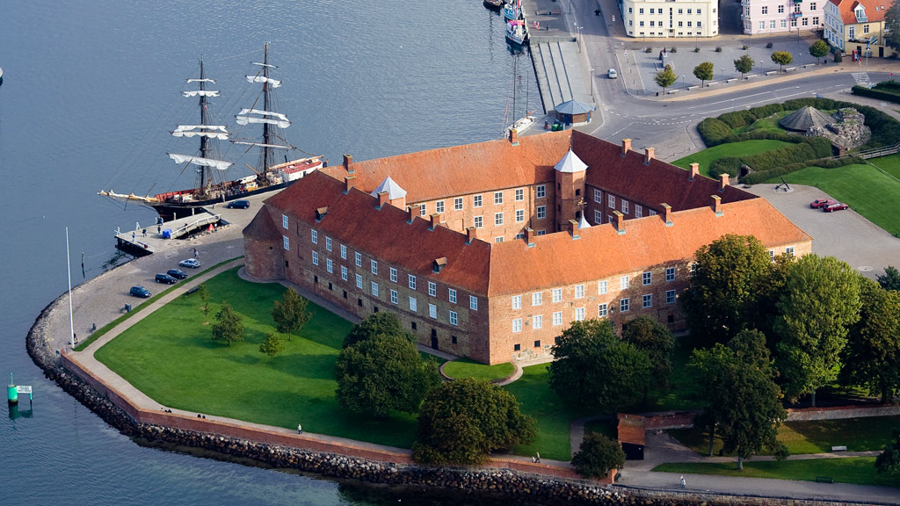
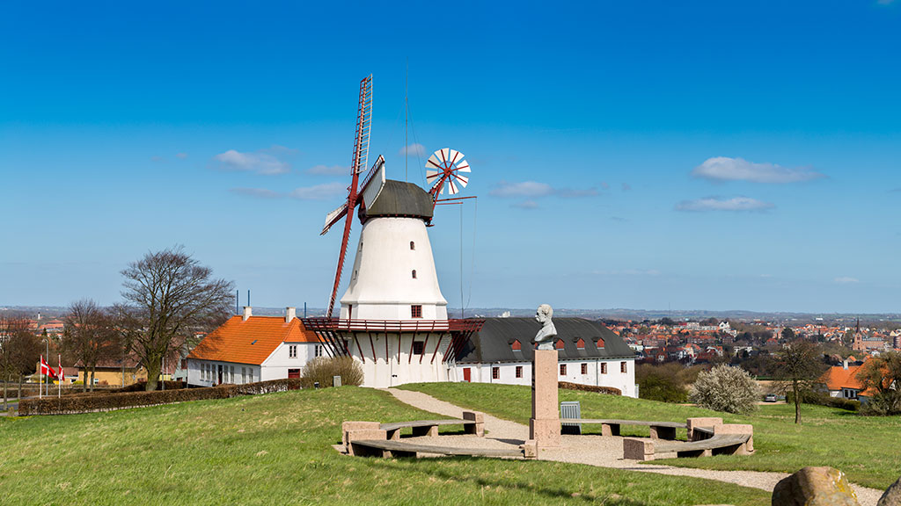
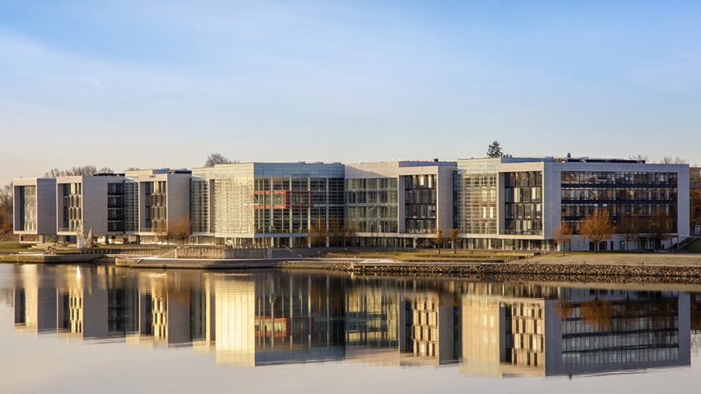
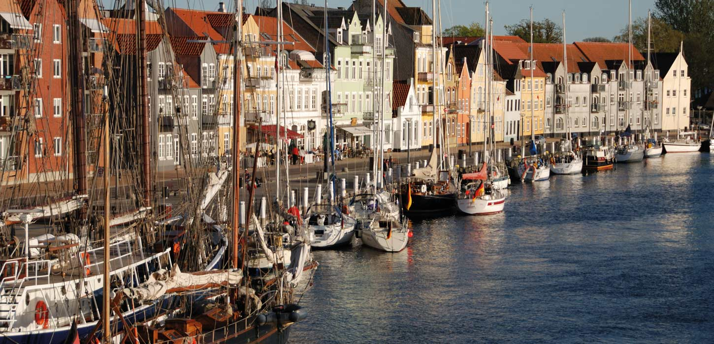

Sightseeing in Sønderborg
Sønderborg is full of interesting places to see. Here are some of the most popular attractions for visitors.
Sønderborg Castle
Sønderborg Castle is one of the most famous landmarks in the city. It has a long history, dating back to the Middle Ages. Today it is a museum where you can learn about the region, art, and old traditions.
Dybbøl Mill
Dybbøl Mill is an important symbol of the 1864 war. The area around the mill is very beautiful, and you can walk to the Dybbøl trenches nearby.
The Alsion Building
Alsion is a modern building located near the waterfront. It includes the University of Southern Denmark, a concert hall, and research facilities. It is one of the best examples of modern architecture in Sønderborg.
Sønderborg Harbour
The harbour promenade is a great place for a walk. You can enjoy the sea view, small cafés, boats, and modern buildings along the water. It is especially beautiful during sunset.